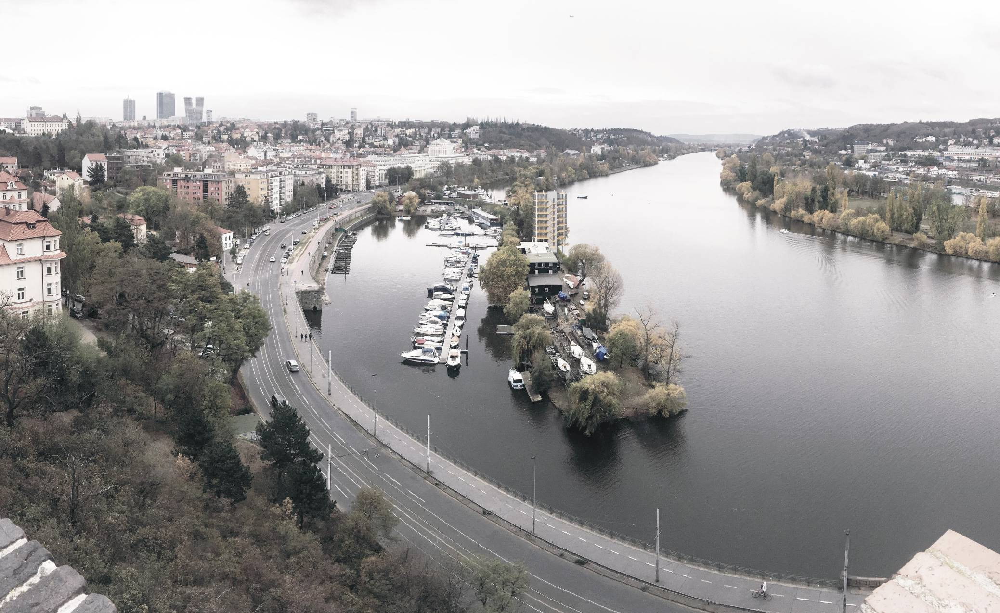
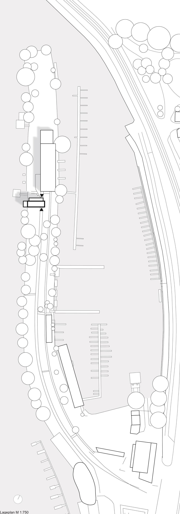
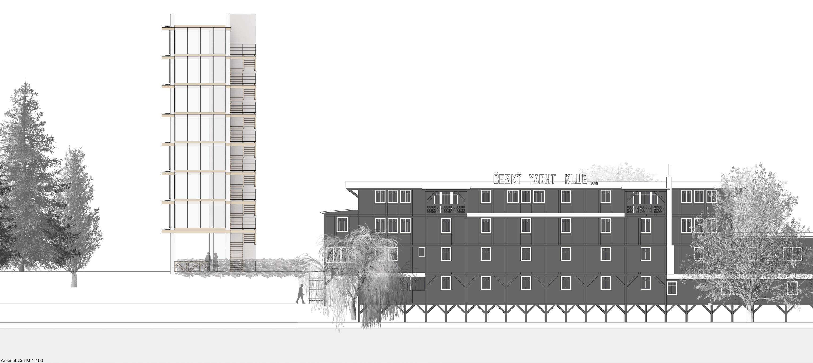
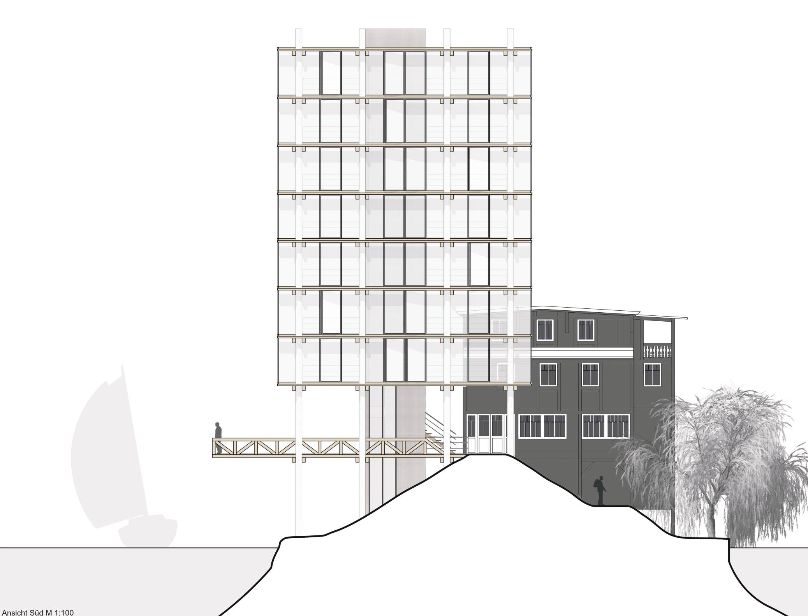
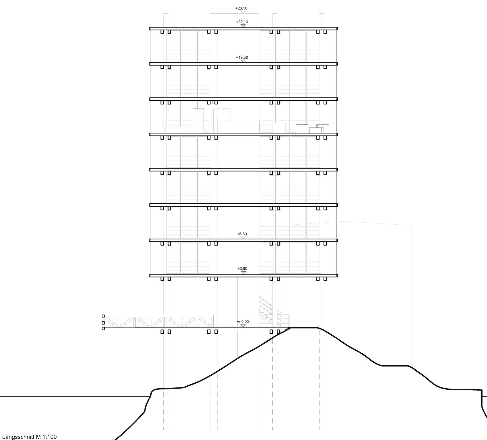
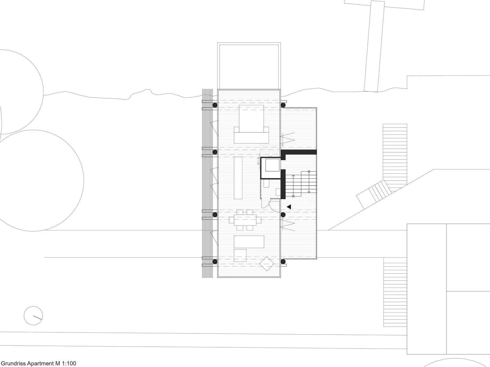
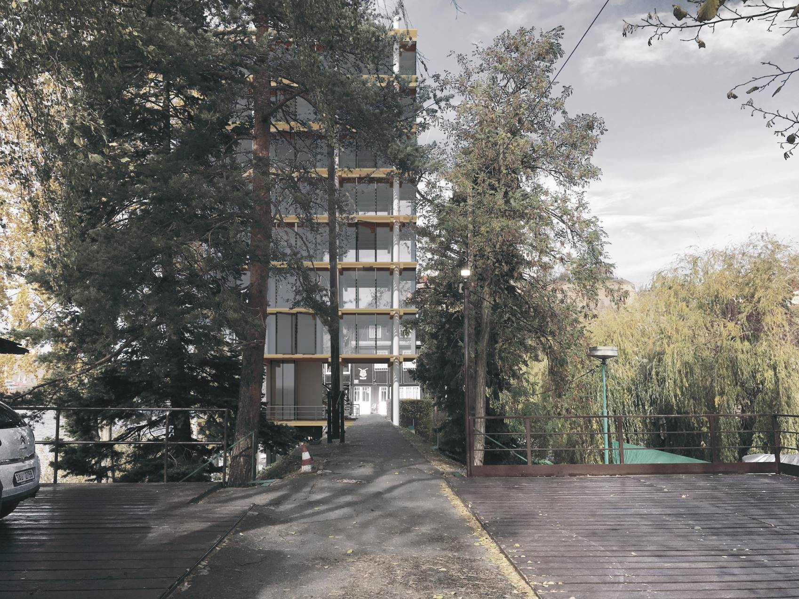
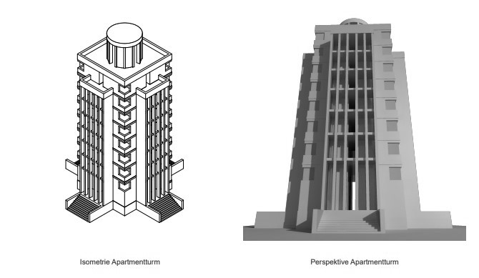
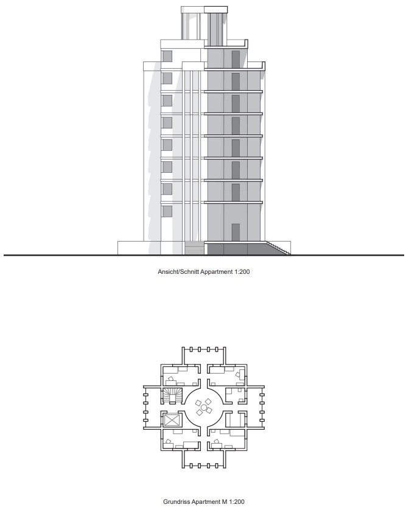

The birthplace of Czech sailing lies in Podolí, 3 km south of Prague's city center. Here stands the venerable clubhouse of the Czech Yacht Club — built entirely of wood in 1912, continuously expanded, and still full of charm.
A campanile is a freestanding bell tower beside a church, without direct connection. Just as a campanile extends a church, this tower extends the yacht club — placed on the opposite side of the dam, giving each building its own facade toward the river.
The existing building faces the harbor side, so the tower is positioned on the river side. This way neither building overshadows the other — instead, the tower extends the club's presence toward the Moldau.
To emphasize the unity of both buildings, the wooden construction method is adopted. However, the vertical load-bearing is achieved through external steel supports, making the facade more open and transparent. On the ground floor, a pier-like wooden deck invites visitors to step closer to the waterfront.
The tower is intended as a guesthouse for the yacht club.






Preliminary Exercise

